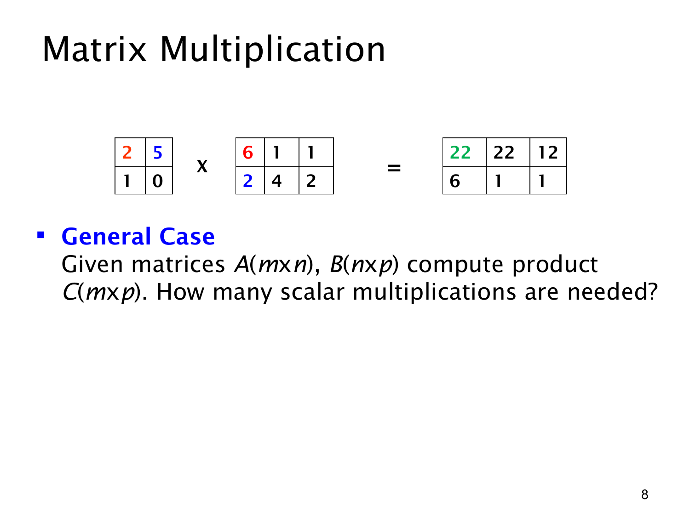

课件第 8 页讲解原文
查看这一页课件

矩阵乘法中，要做多少次普通乘法？
这页用矩阵乘法说明怎样数算法的操作次数。图中的矩阵是：
A=(2150),B=(621412).
矩阵相乘时，结果的第 i 行、第 j 列元素，来自 A 的第 i 行和 B 的第 j 列对应相乘再相加。
例如图上用颜色标出的左上角元素是：
c11=2×6+5×2=12+10=22.
同样，第一行的另外两个元素是 2×1+5×4=22、2×1+5×2=12。第二行由 (1,0) 分别和三列计算，得到 6,1,1。因此：
AB=(226221121).
题目问的是 scalar multiplications（标量乘法），也就是普通数字之间的乘法，不是整个矩阵相乘算一次。
一般地，A 是 m×n，B 是 n×p，结果 C 是 m×p。标准逐项算法要计算 mp 个结果元素，每个元素需要 n 次标量乘法：
cij=k=1∑naikbkj.
因此总乘法次数为 mp×n=mnp。本页例子对应 m=2,n=2,p=3，于是有 2×2×3=12 次乘法。这是在按标准算法计数，包含乘以 0 的步骤；如果额外利用特定矩阵中的零来优化，实际执行次数可能减少。